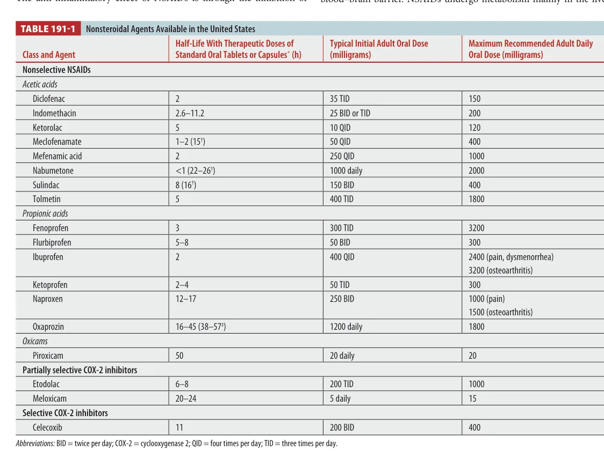
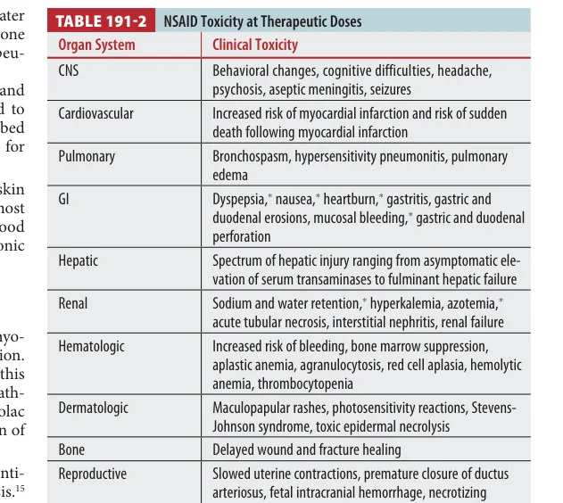
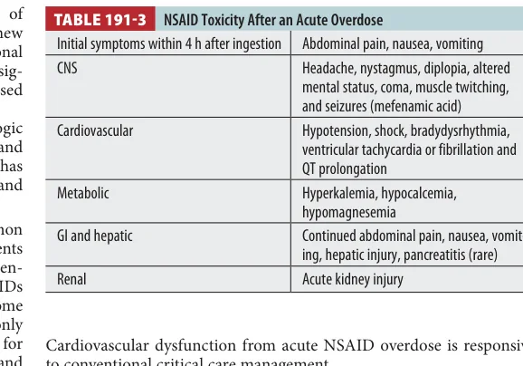
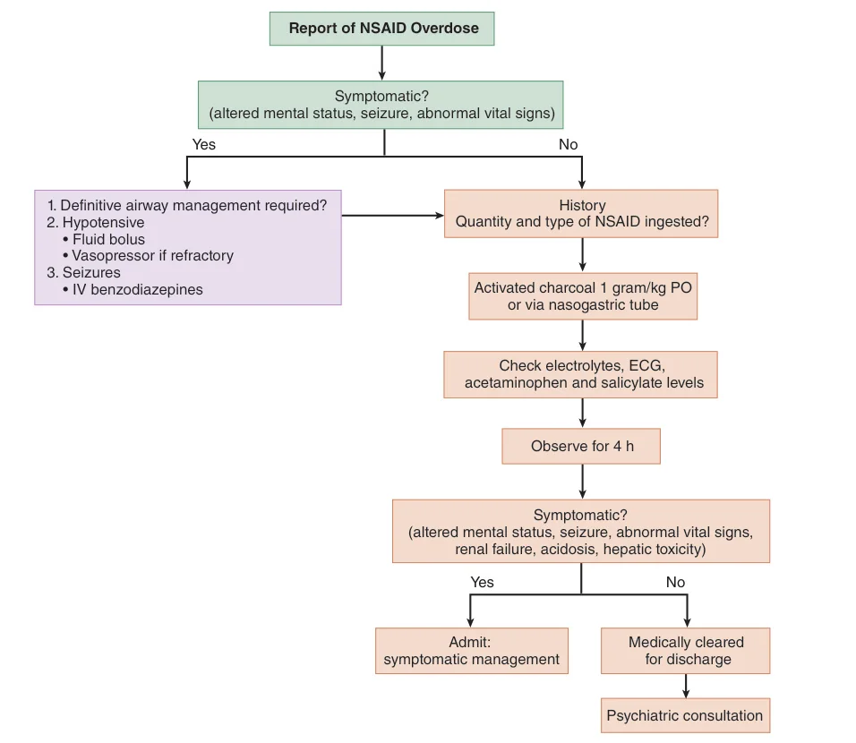

Acute NSAID overdose is usually benign, but therapeutic-dose NSAID harm is common: GI bleeding, renal injury, blood pressure effects, and cardiovascular risk. The key is separating chronic/therapeutic toxicity from massive acute overdose.
Board lens: most asymptomatic acute ingestions can be observed for 4 hours. Severe symptoms suggest large ingestion or a higher-risk NSAID such as mefenamic acid or phenylbutazone.
Overview
Why usually benignNSAIDs have a large therapeutic window; many acute overdoses cause little more than GI upset.
Why still importantTherapeutic use causes far more morbidity than overdose: GI bleeding, renal failure, hypertension, and cardiovascular events.
Early symptomsAbdominal pain, nausea, and vomiting usually begin within 4 hours after ingestion.
Pharmacology
NSAIDs reversibly inhibit cyclooxygenase (COX), decreasing prostaglandin production. COX-1 is constitutive and supports gastric mucosa, renal blood flow, and platelet function; COX-2 is inducible in inflammation but also has physiologic roles.
Tintinalli Source Check
Table 191-1 maps available NSAIDs, half-life, usual doses, and maximum recommended doses.

Tintinalli Table 191-1. Nonsteroidal agents available in the United States.
PK pearl: NSAIDs are highly protein bound. In large overdose, protein binding saturates, free drug rises nonlinearly, and absorption of ibuprofen/naproxen may be delayed to 3-4 hours.
Drug Interactions
AspirinIbuprofen three times daily can competitively inhibit aspirin's antiplatelet/cardioprotective effect.
AntihypertensivesNSAIDs blunt antihypertensive effect and can worsen blood pressure through renal prostaglandin inhibition.
AnticoagulantsWarfarin and DOAC combinations increase GI bleeding risk.
Renally cleared drugsNSAIDs can decrease clearance of lithium, methotrexate, metformin, and other renally eliminated drugs.
Toxicity at Therapeutic Doses
Tintinalli Source Check
Table 191-2 is the chronic/therapeutic-dose harm table. This is different from acute overdose.

Tintinalli Table 191-2. NSAID toxicity at therapeutic doses.
PulmonaryBronchospasm and hypersensitivity pneumonitis, especially in aspirin/NSAID-sensitive airway disease.
SkinMaculopapular rash, photosensitivity, SJS/TEN. Ketoprofen and piroxicam are photoallergy-heavy names.
CardiacLong-term NSAID use increases MI and cardiovascular risk; risk is dose/duration related.
PregnancyAvoid after 29 weeks because of fetal pulmonary hypertension/ductus arteriosus effects.
Toxicity with Acute Overdose
Tintinalli Source Check
Table 191-3 summarizes acute overdose toxicity: GI symptoms early, then CNS/cardiovascular/metabolic/renal/hepatic findings in severe cases.

Tintinalli Table 191-3. NSAID toxicity after an acute overdose.
Severe overdose pattern: altered mental status, seizures, coma, metabolic acidosis, shock, electrolyte abnormalities, hepatic injury, pancreatitis, and acute kidney injury. Most severe toxicity occurs after more than 400 mg/kg exposure.
Mefenamic acid has a notable association with seizures. Hypotension and dysrhythmias are not usually primary NSAID effects, but shock and electrolyte/acid-base derangements can provoke rhythm problems.
Treatment
Tintinalli Source Check
Figure 191-1 is the ED algorithm: symptomatic patients get resuscitation; asymptomatic patients get history, charcoal when appropriate, labs/ECG/coingestion testing, and 4-hour observation.

Tintinalli Figure 191-1. Approach to treatment of acute NSAID overdose.
ABCsAirway/ventilation for coma; fluids for hypotension; vasopressors if refractory.
SeizuresBenzodiazepines first. Think mefenamic acid in NSAID seizure stems.
CharcoalConsider if ingestion >100 mg/kg, early, and airway protected. Give within roughly 1 hour when useful.